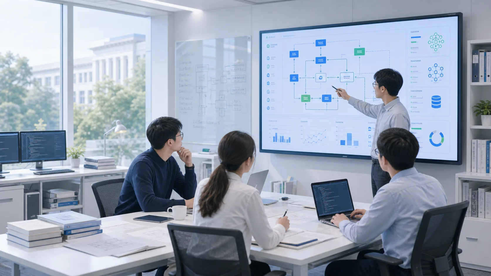

科研
高校合作与博士研发背景。
轻微科技与高校保持深度产学研合作，核心底座研发人员具有博士背景，并在中山大学、华南理工大学、广东工业大学、广东药科大学等高校任职或开展科研合作。
我们将高校科研能力、平台底座研发和工程化交付结合起来，为政府、高校、科研机构、集团企业等客户提供可信、可落地、可持续演进的信息化系统建设服务。
高校合作与博士研发背景。
Qwe 信息系统构建底座。
从方案设计到上线运维。
面向长期运营持续迭代。
轻微科技不是单纯承接软件开发，而是以科研背景、平台底座和工程交付体系支撑客户长期建设。我们关注系统是否能真正上线、稳定使用，并随着组织业务持续演进。

客户选择信息化建设伙伴，本质上是在选择一套可靠的技术判断、项目方法和长期服务能力。
核心底座研发人员具有博士背景，并与多所高校保持长期产学研合作，持续吸收前沿技术方法。
围绕 Qwe 平台沉淀表单、流程、权限、数据、系统集成和 AI 大模型接入能力。
以需求梳理、架构设计、开发实施、上线运维和持续迭代，保障系统长期可用。